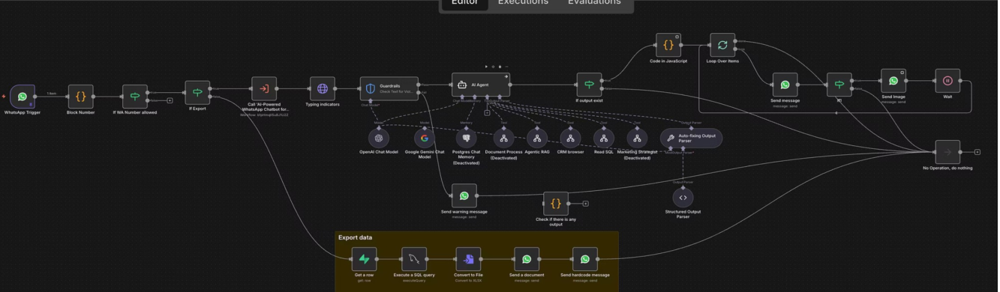

A software company in Puchong builds and operates a Loyalty CRM platform — a SaaS product used by retail businesses to manage their customer loyalty programmes, member data, and marketing campaigns.
Their clients' staff — shop managers, administrators, frontline employees — needed constant support. Every day, the same questions came in: How do I reset a member's password? How do I change a birthday? How do I renew a loyalty card? How do I run a report?
On top of that, the support team had to perform hands-on portal tasks, pull BI reports, and keep their own internal knowledge up to date. To manage all of this, they needed multiple customer support executives working full hours.
Hiring was expensive. Scaling was painful. And customers still had to wait.
"We needed our support to be available 24/7 — but we couldn't keep hiring people just to answer the same questions over and over again."
a160z built a WhatsApp Multi-Agent AI Support System — an intelligent orchestration layer that coordinates three specialised AI agents, all accessible through a single WhatsApp number. Clients simply message the bot, and the right agent takes over automatically.
The key insight: not all support requests are the same. Some need knowledge answers, some need system actions, and some need data. So instead of one agent trying to do everything poorly, we built three agents that each do one thing very well.
Answers "How To" questions by querying the product manual and documentation knowledge base — instantly, accurately, 24/7.
Logs into the CRM portal and performs admin tasks: change member details, reset passwords, renew cards, update statuses — all on command.
Pulls business intelligence reports and campaign performance metrics from the database and delivers them directly in WhatsApp.
A shop manager messages the WhatsApp number: "How do I check how many points a member has?" — the RAG agent searches the product manual and replies instantly with step-by-step instructions.
Another message comes in: "Can you change member ID 00123's birthday to 15 March?" — the Browser Automation agent logs into the web admin portal, navigates to the member record, makes the change, and confirms back via WhatsApp.
A manager asks: "What's the campaign performance for last month?" — the Data Agent runs a SQL query, formats the output as a clean table, and sends it as a document directly in the chat.
All of this happens automatically. The one support executive on duty monitors the conversations and only steps in for truly complex escalations. Everything else? Handled.

The n8n multi-agent orchestration workflow — WhatsApp trigger routes requests to the right specialised agent automatically
The system is built on n8n as the orchestration layer. A WhatsApp trigger receives every incoming message, which is then routed by an AI orchestrator to the appropriate sub-agent based on intent classification.
The RAG agent is powered by Supabase as the vector knowledge base, storing the entire product manual as searchable embeddings. The Browser Automation agent uses Puppeteer and Airtop for reliable web portal interactions. The Data agent connects directly to the client's database via SQL queries.
The company went from needing multiple full-time support executives to running their entire support operation with one person overseeing the AI agent. That one person manages exceptions, updates the knowledge base, and monitors system performance — the agents handle everything else.
Client satisfaction improved because response time went from minutes or hours to seconds. Portal tasks that once required a support executive to manually log in and navigate are now done automatically on request. Reports that used to take half a day to compile arrive instantly in WhatsApp.
Built in 1 month. Running at from RM1,000/month — a fraction of what even a single full-time support hire would cost, with dramatically better performance and zero sick days.
Free 1-Hour Consultation
Describe the problem — the repetitive questions, the manual tasks, the reports nobody wants to compile. We'll show you how AI can handle it, in a free 1-hour consultation. No pitch, no obligation.